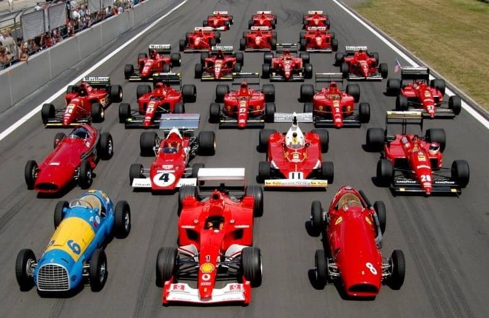
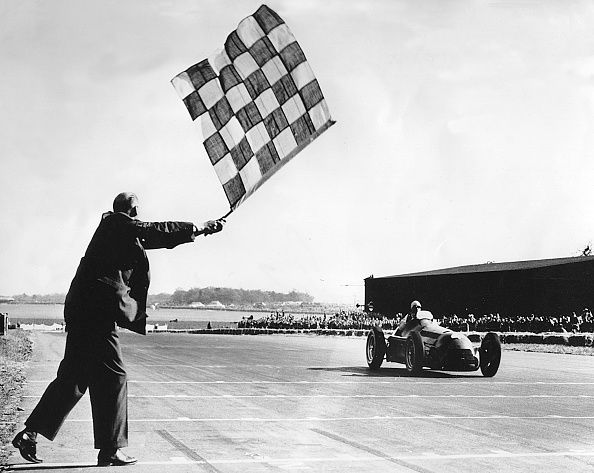

La principal competición del automovilismo internacional
El Campeonato Mundial de Fórmula 1 de la FIA, más conocido como Fórmula 1, es la principal competición de automovilismo internacional y el campeonato de deportes de motor más popular y prestigioso del mundo. La entidad que la dirige es la Federación Internacional del Automóvil (FIA). Desde septiembre del 2016, tras la adquisición de Formula One Group, la empresa estadounidense Liberty Media es la responsable de gestionar y operar el campeonato. A cada carrera se le denomina Gran Premio y el torneo que las agrupa es el Campeonato Mundial de Fórmula 1. La mayoría de los circuitos de carreras donde se celebran los Grandes Premios son autódromos, aunque también se utilizan circuitos callejeros y anteriormente se utilizaron circuitos ruteros. A su vez, los automóviles utilizados son monoplazas con la última tecnología disponible, siempre limitadas por un reglamento técnico. El inicio de la Fórmula 1 moderna se remonta al año 1950, en el que participaron escuderías como Ferrari, Alfa Romeo y Maserati. Algunas fueron reemplazadas por otras nuevas como McLaren, Williams, Red Bull y otras que volvieron como Mercedes se han alzado varias veces con el Campeonato Mundial de Constructores. Por su parte, los pilotos deben contar con la superlicencia de la FIA para competir, que se obtiene por los resultados en otros campeonatos.
Historia
Antecedentes
Las carreras de Gran Premio tienen sus raíces en las carreras automovilísticas surgidas en Francia en 1894. En un principio se trataba de eventos individuales, sin conexión y en caminos de tierra, prácticamente sin ninguna limitación. De 1927 a 1934, el número de carreras consideradas Gran Premio creció hasta alcanzar dieciocho en 1934, el máximo antes de la Segunda Guerra Mundial.
Creación del campeonato
En 1945, inmediatamente después de la Segunda Guerra Mundial, sólo hubo cuatro carreras. Antes de la Segunda Guerra Mundial se habían establecido las reglas para las competiciones de Grand Prix, que debían obedecer tanto autos como pilotos. Estas reglas, conocidas en su conjunto como Fórmula, no se concretaron hasta que en 1947 la antigua AIACR se reorganizó, pasándose a llamar la Federación Internacional del Automóvil, conocida por las siglas "FIA". Con sede central en París, al final de la temporada de 1949 anunció que para 1950 unirían varios Grandes Premios nacionales para crear un Campeonato Mundial de Pilotos, por lo que en 1950 se celebró el primer campeonato de Fórmula 1. Por motivos económicos, en los años de 1952 y 1953 todavía se compitió con coches de Fórmula 2 y el calendario continuó incluyendo varias carreras que no eran consideradas Grandes Premios hasta 1983. Se estableció un sistema de puntuación y se reconocieron un total de siete carreras como aptas para el Campeonato del Mundo.
Las primeras carreras
El primer Gran Premio se realizó el 13 de mayo de 1950 en el circuito de Silverstone y fue ganado por el italiano Giuseppe Farina, consiguiendo además el campeonato de 1950 tras vencer a su compañero de equipo, el argentino Juan Manuel Fangio (ambos en la escudería Alfa Romeo). Sin embargo, Fangio ganó el título en 1951, 1954, 1955, 1956 y 1957. Su racha fue interrumpida debido al bicampeonato del piloto de Ferrari Alberto Ascari. También en esta época se vieron pasar pilotos como el británico Stirling Moss que aunque pudo competir con regularidad, nunca fue capaz de ganar el Campeonato Mundial, y por ese motivo los ingleses lo consideran «el conductor más grande que nunca ganó un título mundial». El periodo estuvo dominado por las escuderías dirigidas por fabricantes de automóviles —Alfa Romeo, Ferrari, Maserati y Mercedes Benz— que habían competido antes de la guerra. En las primeras temporadas se llegaron a utilizar coches previos a la Segunda Guerra Mundial como el Alfa Romeo 159. Tenían motor frontal, de 1,5 litros de cilindrada sobrealimentados o de 4,5 litros de aspiración natural y neumáticos con dibujo. Los campeonatos mundiales de 1952 y 1953 se realizaron con la normativa de la Fórmula 2, con coches más pequeños y menos potentes, debido al escaso número de coches disponibles de Fórmula 1. Cuando se restableció el Campeonato Mundial de Fórmula 1, los motores estaban limitados a 2,5 litros; en 1954, Mercedes presentó el avanzado W196, que incluía innovaciones como distribución desmodrómica e inyección de combustible, así como una carrocería estilizada. Mercedes ganó el campeonato de conductores dos años consecutivos (1954 y 1955), antes de retirarse de todas las competiciones automovilísticas, tras el desastre de Le Mans en 1955.
Primer gran cambio de la historia
En 1954, ya con motores de 2.5 litros de cilindrada, Mercedes inició la batalla evolutiva para tratar de destronar a las marcas italianas e innovó con el famoso Mercedes W196, presentando las ruedas totalmente carenadas. No obstante, fue más algo estético que efectivo y sería otro equipo el que se adjudicaría uno de los grandes avances de la época: la escudería Cooper, que apostó en 1958 por ubicar los motores en la parte trasera del monoplaza y haciendo que el conductor estuviera delante. Aquello hizo que Sterling Moss rozara el título ese mismo año y se quedara a solo un punto del campeón con Ferrari Mike Hawthorn, y en 1959, la idea fue clave para que Jack Brabham levantara el cetro con el Cooper T51. Cambio clave en la historia de la F1, puesto que todavía en estos momentos, los monoplazas de F1 siguen teniendo su motor en la parte trasera.
La llegada de los alerones y décadas de innovación mecánica y aerodinámica
En la década de los 60, los voluminosos morros de los coches que se veían en los primeros años de la F1, dejaron espacio a unas partes delanteras mucho más finas y estilizadas para mejorar la aerodinámica de los vehículos. Colin Chapman (Lotus) fue crucial para la llegada de los apéndices aerodinámicos al estudiar la idea que había instaurado el ex piloto Jim Hall en Estados Unidos. Todo ello, basándose en el principio físico de las alas de un avión, que ubicadas al revés, debían ejercer una fuerza en el suelo que pegara más el coche al asfalto para poder ganar paso por curva. Primero, el equipo introdujo GP Mónaco 1968 unas pequeñas alas en su 49B y partir de ahí, como suele pasar en la F1 cuando algo funciona, todos trataron de explotar dicha idea. La locura por las alas fue tal que los equipos probaron una gran variedad de alerones, algunos desproporcionados y elevados varios metros por encima del coche, y por ello, en la temporada 1970, se implantaron una serie de normas para el tamaño y colocación de los alerones por razones de seguridad. Posteriormente, Lotus seguiría innovando presentando el Lotus 72, el primer coche de F1 con refrigeración en las entradas laterales de los coches. Y finalmente, Colin Chapman se sacó otro conejo de la chistera jugando por vez primera con el efecto suelo, un fenómeno clave para que el coche se agarre al asfalto y aumente así la velocidad en curva del monoplaza para pulverizar todos los récords. En sus inicios y durante muchas décadas, un piloto de F1 era visto como un héroe debido a la peligrosidad que aceptaba correr con tal de competir. Se consideraba que el piloto estaba jugando con la muerte en cada carrera. Y en ese sentido, en 1994, tras los múltiples accidentes mortales que hubo aquel año, entre ellos el de Ayrton Senna, se decidió aumentar las medidas del cockpit (cabina) para 1995 y 1996, con el piloto más protegido por paredes más altas. Se vieron a partir diferentes cambios. En 1998, los coches de F1 eran más estrechos, mientras que a principios de los 2000, los monoplazas presentaban varios alerones laterales, muestra de la gran evolución aerodinámica en la que había entrado la Fórmula 1, aunque en 2009, ante la enorme obsesión de los equipos por la aerodinámica y gran complejidad de estas soluciones, se quitaran los alerones laterales, solo presentando uno trasero y uno delantero. Después de múltiples cambios de reglamentación, en 2017 los coches pasaron a ser mucho más anchos, con un alerón trasero más grande e inclinado hacia atrás. y unos neumáticos más anchos. Se conseguía así tener uno de los coches más rápidos de la historia debido a que podía tener una mayor velocidad en curva. Pero la gran cantidad de aire sucio que desprende un coche de F1 hace que el coche perseguidor pierda todo el agarre aerodinámico en frenada y curva, por lo que se hace imposible que dos monoplazas iguales puedan batallar de tú a tú en pista. Así pues, la F1 presentó un nuevo reglamento técnico para 2021 , finalmente aplazado por el coronavirus para 2022, para cambiar completamente la concepción de los monoplazas y aumenten las batallas en pista.
Evolución de los motores de un F1
En 2006, la F1 se despide de los míticos motores V10 y se pasa a los motores V8 de 2.4 litros. Se dijo adiós así a grandes unos propulsores míticos que estuvieron en el ‘Gran Circo’ desde 1989 hasta el 2005. Motores que daban miedo solo al escuchar el coche en pista y por su tremenda potencia, de 19.000 Revoluciones por minuto (RPM), 900-950 caballos (CV), 90kg de peso y un consumo de combustible de unos 85 litros cada 100 kilómetros. Precisamente, su gran consumo se convirtió en su mayor problema, puesto que suponía un enorme coste para los equipos. Y tras la crisis económica del 2006 la F1 apostó por cambiar a los motores V8, de 18.000 RPM, 750 CV, 95 kg de peso y un consumo más aceptable: de 65 litros cada 100 kilómetros. Los V8 se mantuvieron en la F1 de 2006 a 2013. Dichos motores, debido a la crisis, se mantuvieron congelados y la F1 buscó una mejora de prestaciones a través del KERS, que todavía se usa hoy día. El “Kinetic Energy Recovery System’ permitía recuperar parte de la energía que el coche generaba al frenar para cargar la energía de unas batarías que posteriormente el piloto, a través de un botón, podía usar para alcanzar velocidades mayores. Eso no fue más que el inicio de los motores híbridos actuales, y es que en 2014 se pasó a la denominada ‘era híbrida’, gran mal de la Fórmula 1 para muchos, en la que solo ha ganado Mercedes.
Era hibrida y nuevos dueños
En 2014, la Fórmula 1 llevó adelante un gran cambio reglamentario, remplazando los motores V8 por los V6 de 1.6 litros turboalimentados. Los monoplazas ahora cuentan con un sistema de propulsión híbrido, al añadir un sistema de recuperación de energía. A Mercedes, Ferrari y Renault se sumó Honda en 2015 como proveedora de motores de McLaren, siendo los únicos cuatro fabricantes de esta era. Lewis Hamilton y Mercedes dominaron el comienzo de la era híbrida. Su compañero de equipo Nico Rosberg ganó en 2016, pero a partir de 2017 Hamilton ganó otros cuatro títulos consecutivos, igualando la cifra de Michael Shumacher de 7 títulos mundiales. En 2021 se vivió una de las más álgidas batallas por el título entre Hamilton y Max Verstappen, duelo que se acabaría llevando el holandés. El desarrollo de motores y el cambio reglamentario de 2017, en el que se mejoró la carga aerodinámica, produjo que los monoplazas sean los más rápidos de la historia. El Formula One Group es controlado desde septiembre de 2016 por la empresa estadounidense Liberty Media, propiedad de John C. Malone. Bernie Ecclestone continuó como director ejecutivo de la empresa hasta el 23 de enero de 2017, tras 39 años al mando de los negocios de la Fórmula 1.
La nueva era
Después de la pandemia, que hizo retrasar el mayor cambio aerodinámico en la Fórmula 1 en 40 años de 2021 a 2022, por fin se produjo. Los coches adoptaron el llamado efecto suelo, y se simplificaron muchas partes del coche, como los alerones, para reducir las turbulencias que cada pieza produce, y por consecuencia, el aire sucio, que hace que el coche de atrás le cuesta más acercarse. Esto se ha hecho para mejorar el espectáculo, que los coches se puedan seguir más de cerca. Además, se ha producido una congelación de los motores, donde solo se puede mejorar la fiabilidad de los mismos, hasta el cambio que se producirá en 2026.
Objetivo sostenible para el 2030
La Fórmula 1 tiene el objetivo marcado desde 2019 de ser una categoría que, para la temporada 2030, no emita a la atmósfera del planeta más gases de efecto invernadero de los que elimine. Y después de casi cuatro años, el plazo hasta 2030 es cada vez más corto. Así que la organización puso manos a la obra para cumplir esas metas para finales de la década. Ellen Jones, directora medioambiental, social y de gobernanza de la Fórmula 1, ofreció una actualización de los planes de la categoría. Además de números más rápidos por temporada, aseguró que hay que hacer cambios no sólo en el ámbito de la tecnología, con el paso de los años, sino en la parte cultural. Al fin y al cabo, los cambios en el calendario, la forma de viajar y las cuestiones perfectamente entendidas tendrán un gran impacto en los planes.
Conclusión
La Fórmula 1 ha experimentado una fascinante evolución a lo largo de su rica historia, transformándose de una competición modesta a un espectáculo global de alta tecnología y velocidad. Desde sus humildes comienzos en la década de 1950 hasta la actualidad, la Fórmula 1 ha sido testigo de avances significativos en términos de tecnología, seguridad, competitividad y alcance mediático. En sus primeras décadas, la Fórmula 1 se caracterizó por la simplicidad de los autos y la escasa participación de equipos y patrocinadores. Sin embargo, a medida que la tecnología avanzaba, los vehículos se volvían más aerodinámicos, potentes y sofisticados. La introducción de la tecnología híbrida y la búsqueda constante de la eficiencia energética han llevado a una nueva era en la que la Fórmula 1 se ha convertido en un laboratorio de innovación para la industria automotriz. La seguridad también ha sido una prioridad fundamental en la evolución de la Fórmula 1. Tragedias en el pasado llevaron a un enfoque más riguroso en la seguridad de los pilotos y la introducción de medidas como el halo, un dispositivo de protección para la cabeza, que ha demostrado ser crucial en la prevención de lesiones graves. La competencia en la pista ha alcanzado niveles nunca antes vistos, con equipos y pilotos compitiendo en un escenario global. La rivalidad entre escuderías legendarias, como Ferrari, McLaren y Mercedes, ha contribuido a la emoción del deporte, mientras que pilotos icónicos como Ayrton Senna, Michael Schumacher y Lewis Hamilton han dejado una marca indeleble en la historia de la Fórmula 1. Además, la Fórmula 1 ha abrazado las plataformas digitales y las redes sociales, ampliando su alcance y atrayendo a una nueva generación de fanáticos. Las transmisiones en vivo, las interacciones en línea y las iniciativas de marketing han convertido a la Fórmula 1 en un espectáculo no solo para los apasionados seguidores del automovilismo, sino también para audiencias más amplias en todo el mundo. En conclusión, la evolución de la Fórmula 1 a lo largo de los años refleja no solo avances tecnológicos y de seguridad, sino también una transformación en su estatus como un evento deportivo de élite. Desde su origen modesto hasta convertirse en un fenómeno global, la Fórmula 1 continúa siendo una combinación única de velocidad, ingeniería y habilidad conductora que sigue cautivando a audiencias en todo el mundo.
Video evolución de los autos Ferrari en la F1